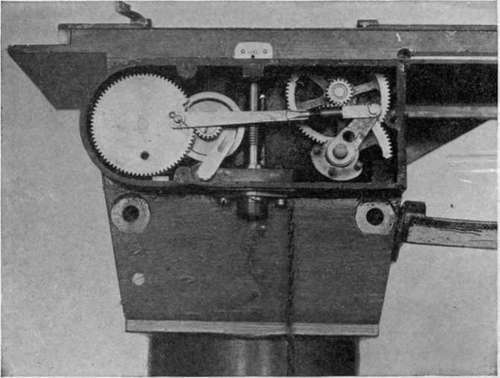

The English L Type Camera
Description
This section is from the book "Airplane Photography", by Herbert E. Ives. Also available from Amazon: Airplane photography.
The English L Type Camera
The L, a modification of the earlier C and E models, differs from its predecessors chiefly in the addition of a mechanism which when connected with one loaded magazine is about 35 pounds. Its manner of functioning may be studied from the picture of the mechanism (Fig. 51). The part of the mechanism to the left is inoperative during hand operation, and the large toothed wheel is locked by the removable pin shown hanging on its chain in Fig. 50. To change a plate and set the shutter the projecting lever (Fig. 50) is thrown over and back. This causes a sliding tray, in which the exposed plate rests, to travel to the right, over the receiving magazine, where the plate is dropped. After this the tray returns to the left exposing position. Simultaneously the shutter is wound up. Exposure is made either by pressing down upon the plunger, or better, by using a Bowden wire. Provision for both methods of exposing, one for the pilot and one for the observer, is shown in Fig. 81. The shutter is th variable-aperture type already described, provided in addition with a tension adjustment on the back of the camera. A flap behind the lens does the capping during the setting operation.
Fig. 51. - Mechanism of "L" camera.
For power operation the camera is connected through a flexible shaft with a wind driven propeller (Figs. 50, 83 and 84). The locking pin is now moved over from the toothed wheel to the lever arm, so that the rotation of the worm driving the large toothed wheel forces the lever through its plate changing motion. To prevent repetition, a part of the periphery of the toothed wheel is cut out, so that it stops when its cycle is run. When the Bowden wire actuates the shutter release it forces the toothed wheel around into engagement (aided by one spring tooth) and so starts the cycle once more.
When connected with the air propeller the worm is rotated continuously. Other sources of power—an electric motor, for instance—can be attached through the same kind of flexible shaft. If an electric motor is employed it may be run continuously or it may be operated with an insulated sector introduced into the large toothed wheel so that the electric circuit is broken and the motor stops until the wheel is once more forced around by the exposing lever.
Faults Of The L Camera
The L camera was the mainstay of the English Air Service. In fact for the last two years of the war it was practically the only camera the English used, and they thought highly of it. It is, of course, subject to the limitation of small plate size and short focus lens. It is in many ways an inconvenient camera to handle. For instance, the upper magazine cannot be closed or removed until all the plates are passed through. Its dependence upon gravity for the plate changing operation is a fundamental weakness, responsible for its frequent tendency to jam in the air. Experience made the English observers very expert in relieving these jams. Sometimes they would turn the propeller backward (mounting it in an accessible position to provide for this contingency), sometimes they would shake or thump the camera. But while these makeshifts would serve to secure pictures—the chief object, of course, of the photographic service—they can scarcely be said to render the camera satisfactory.
Moreover, the propeller drive has not been universally approved, as it furnishes an additional mechanism to make trouble. Since it is not feasible to change from power to hand operation while in the air, the camera is put out of commission whenever the propeller or shaft is disabled. Bowden-wire controls for both plate changing lever and shutter release were common in the British service, which considered the extra operation or the extra muscular exertion unimporant when compared with the greater assurance of reliable action.
Continue to:
- prev: Chapter IX. Semi-Automatic Aerial Plate Cameras
- Table of Contents
- next: The English Lb And Bm Cameras
Tags
camera, lens, airplane, aerial, film, exposure, photography, maps, birdseye